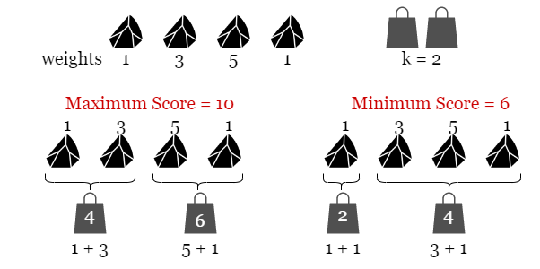
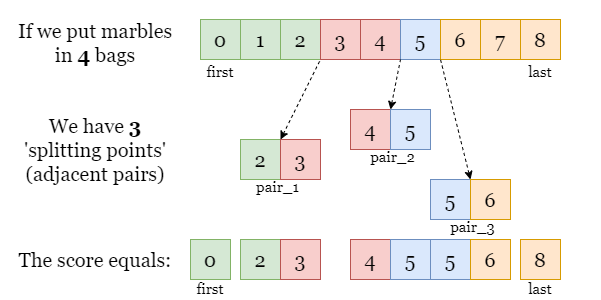
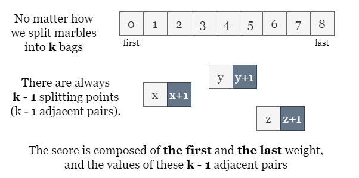
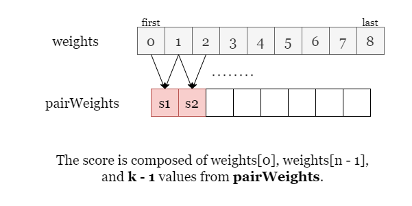

As shown in the picture below, we put 4 marbles in k = 2 bags.

There are several ways to split marbles into two bags, we have shown two of them that bring the maximum cost
10 and the minimum cost 6. Therefore the difference between them is 10 - 6 =
4.
Let's start with a brute-force approach. Since we are looking for the maximum score and the minimum score, we shall
try iterating over all possible splits. Splitting n marbles into k consecutive groups is a
typical sticks-and-stones problem that has as many as (nk)=n!k!(n−k)!{n \choose k} ={{n!} \over {k!(n - k)!}} solutions, thus it is
impractical to iterate over all possibilities.
We might also think of using dynamic programming to solve the subproblem (x, y): splitting previous
x marbles into y bags, then moving on to the next larger subproblem (x + 1,
y) or (x, y + 1), until we reach the best solution of the entire problem (n, k).
However, given the size of the input array and the maximum value of k, dynamic programming brings at
most O(n2)O(n ^ 2) time thus it won't pass the time limit.
Let's shift our thinking a bit. Instead of focusing on how to partition the array of marbles, let's now focus on the boundary of each subarray, the splitting point and try to find the relation between the score and these splitting points.
In the picture below, we split the array into 4 subarrays (shown in different colors) and resulting in 3 splitting points, each of which is made of 2 adjacent ends.
What is the score of this split?
Since the score of a subarray only matters with its two ends, we can tell that the total score equals the sum of the first element, the last element, and the sum of every pair (two adjacent ends at each split).

In general, if we partition the array into k groups, we always make k - 1 splitting points
regardless of how the array is partitioned.

Now we know how to find the maximum score, by finding the sum of the largest k - 1 pairs. Similarly, we
can get the minimum score by finding the sum of the smallest k - 1 pairs. This can be done by
collecting every pair sum in an array pairWeights and sorting them.

MaxScore=weights[0]+weights[n−1]+∑i=n−kn−1pairWeights[i]MaxScore = weights[0] + weights[n - 1] + \sum_{i = n - k}^{n - 1} {pairWeights[i]} (if sorted the array pairWeights in
non-decreasing order)
MaxScore=weights[0]+weights[n−1]+∑i=n−kn−1pairWeights[i]\text{MaxScore} = \text{weights}[0] + \text{weights}[n - 1] + \sum_{i = n - k}^{n - 1} {\text{pairWeights}[i]} (if sorted
the array pairWeights in non-decreasing order)
MinScore=weights[0]+weights[n−1]+∑i=0k−2pairWeights[i]\text{MinScore} = \text{weights}[0] + \text{weights}[n - 1] + \sum_{i = 0}^{k-2} {\text{pairWeights[i]}}
Then we have the difference between them as answer=MaxScore - MinScore=∑i=n−kn−1pairWeights[i]−∑i=0k−2pairWeights[i]\text{answer} = \text{MaxScore - MinScore} \\ = \sum_{i = n - k}^{n - 1} {\text{pairWeights[i]}} - \sum_{i = 0}^{k-2} {\text{pairWeights[i]}}
Collect the value of every pair from weights in the array pairWeights.
Sort pairWeights.
Get the sum of the k - 1 largest pairs, and the sum of the k - 1 smallest pairs.
Return answer as the difference of the two sums in step 3.
Java
class Solution {
public long putMarbles(int[] weights, int k) {
// We collect and sort the value of all n - 1 pairs.
int n = weights.length;
int[] pairWeights = new int[n - 1];
for (int i = 0; i < n - 1; ++i) {
pairWeights[i] = weights[i] + weights[i + 1];
}
// We will sort only the first (n - 1) elements of the array.
Arrays.sort(pairWeights, 0, n - 1);
// Get the difference between the largest k - 1 values and the
// smallest k - 1 values.
long answer = 0l;
for (int i = 0; i < k - 1; ++i) {
answer += pairWeights[n - 2 - i] - pairWeights[i];
}
return answer;
}
}
C++
class Solution {
public:
long long putMarbles(vector& weights, int k) {
// We collect and sort the value of all n - 1 pairs.
int n = weights.size();
vector pairWeights(n - 1, 0);
for (int i = 0; i < n - 1; ++i) {
pairWeights[i] += weights[i] + weights[i + 1];
}
sort(pairWeights.begin(), pairWeights.end());
// Get the difference between the largest k - 1 values and the
// smallest k - 1 values.
long long answer = 0;
for (int i = 0; i < k - 1; ++i) {
answer += pairWeights[n - 2 - i] - pairWeights[i];
}
return answer;
}
};
Python
class Solution:
def putMarbles(self, weights: List[int], k: int) -> int:
# We collect and sort the value of all n - 1 pairs.
n = len(weights)
pair_weights = [0] * (n - 1)
for i in range(n - 1):
pair_weights[i] = weights[i] + weights[i + 1]
pair_weights.sort()
# Get the difference between the largest k - 1 values and the
# smallest k - 1 values.
answer = 0
for i in range(k - 1):
answer += pair_weights[n - 2 - i] - pair_weights[i]
return answer
Let nn
be the number of elements in the input array weights.
Time complexity: O(n⋅logn)O(n \cdot \log n)
pairWeights, the array of every pair value having n - 1
elements, it takes O(n⋅logn)O(n \cdot \log n) time.
pairWeights and calculate the cumulative sum of the k -
1 largest elements and the sum of the k - 1 smallest elements, this step takes O(k)O(k) time.
Space complexity: O(n)O(n)
pairWeights of size n - 1 to store the value of
all pairs.